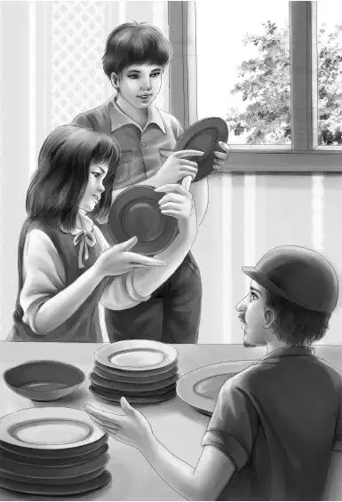

In a short time the train stopped at Glass Factory Junction. The Aldens got off the train and looked around. They could not see any sign of a town. There was a small freight station on one side of the tracks and a large factory on the other. Everything seemed to be in the middle of the woods. Trees grew almost down to the tracks.
“I wonder where the town is，” said Benny.
Al came to meet them. “The town is on the other side of the woods，” he said. “It’s a very small town， anyway. But we have to stop here just the same to unload potash for the factory. And this glass is all over the ground.” He picked up a blue piece.
“Isn’t that beautiful！” said Violet.
Benny said， “Grandfather， I really don’t want to pick up glass. I want to see that talking horse.”
Mr. Alden thought it over. Then he said， “That’s up to you， Benny. You’re old enough to take care of yourself. If you’d rather walk two miles and see the horse， go ahead. You heard Al say we could stay here two hours.”
Henry said， “I thought you were too sleepy to do anything. You said you didn’t sleep at all last night.”
“Well， I am sleepy. When I get back to the caboose I’m going to take a nap. Al told me I couldn’t miss the path through the woods. I’ll go and see the horse first， and then I’ll go into the little caboose and go to sleep. And don’t any of you open the door. Don’t even peek at me and wake me up.” He started off.
Grandfather called， “Don’t get lost， Benny.”
“I’ll find my way all right. If I get lost， I can eat nuts and berries. Children always eat nuts and berries when they get lost，” Benny said， laughing at his own joke.
“Don’t be late， either，” Grandfather called again. “The train won’t wait for you， you know.”
“Yes， I know. I guess I can walk a mile and back in two hours！”
Violet watched Benny as he went into the deep woods. She said to Henry， “I don’t like it. You go with him.”
Henry said， “No， Violet. I don’t think I ought to tell him what to do. Benny must learn to live his own life and make his own mistakes. We all must.”
“Good！” said Grandfather. “Benny will never learn if you look after him all the time， Henry.”
The Aldens picked up so much glass that they had to get a paper bag from the caboose to put it in. Suddenly a man put his head out of the factory window and called， “Would you like to see the glass factory？”
“We’d like to very much， sir，” said Grandfather. They all went up the steps and met the man at the door.
“I’ll show you first how we make pressed glass. Just follow me. My name is Lidstone.”
“I’m James Alden，” said Grandfather， “and these are my grandchildren.”
“Yes， I know，” Mr. Lidstone said， smiling. “I guess you are the people traveling by caboose. Everyone is talking about it. You young people may know how glass is made，” he went on as they went into another room. “We mix sand and potash and get it so hot it melts. Then we pour it and press the glass into molds.”
It was exciting to watch the workmen pouring the melted glass into fancy molds.
“Oh， what beautiful colors！” said Violet.
“And so many，” said Jessie.
“These small dishes are finished，” said Mr. Lidstone. He pointed at a table. “You may choose any color you want. They will be gifts to remember us by.”
“Thank you， sir，” said Henry. “My young brother Benny isn’t here. He went to see the talking horse. Too bad he is missing this.”
“Then you choose one for him，” said Mr. Lidstone.
“Benny would choose red， I’m sure of that，” said Jessie. She picked up a red dish for Benny.
“Let me tell you something about that color，” said Mr. Lidstone. “We use real gold to make red. In the old days， the glassmakers threw in gold dollars to make red. Have you all decided on your colors？”
Jessie held up a blue dish for answer. Violet had a violet one， and Henry chose green. Mr. Alden had a bright yellow one.
“Now come and see the glassblowers，” said Mr. Lidstone. He took them to another room. Three men were blowing glass. A worker picked up a lump of melted glass on a pipe and began to blow.

“Oh， that’s going to be a pitcher，” whispered Jessie.
The big glass ball on the end of the pipe grew larger and larger. Then suddenly it grew smaller. The man jerked off the pipe.
“No， it’s a vase，” said Violet. “Isn’t it wonderful how they do that？”
In another room the Aldens watched a row of men and women making designs on glass dishes. Mr. Lidstone said， “This is very fine work. Each person here is an artist.”
The Aldens could have watched them all afternoon， but they knew they had to get back to the train. They thanked Mr. Lidstone for their visit and went back to the caboose with their new dishes.
Jessie said， “Benny will like to know that his red dish was made with gold.”
Mr. Alden looked at his watch and frowned. “It’s much later than I thought，” he said. “Only five minutes before we go. I hope Benny is in the small caboose taking his nap.”
Jessie said， “He’s probably been back a long time because we stayed so long in the factory. Remember what he said. He told us not to go into that caboose and wake him up.”
“I’d like to peek in and see if he’s there，” said Violet.
“Don’t do it， Violet，” said Henry. “He’ll come out at supper time. You wait and see.”
The train gave two whistles. Then it started. Off went the Aldens. Soon Glass Factory Junction was far behind them.